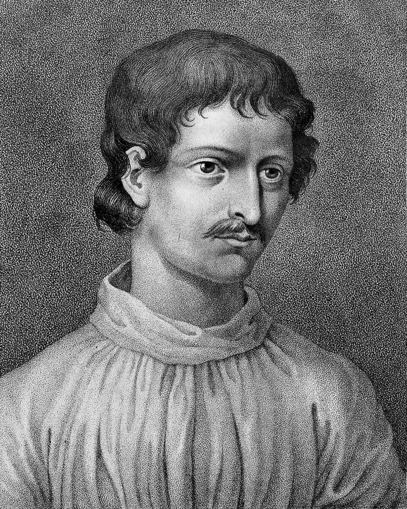

El Santo Oficio entrega a las llamas al fraile Giordano Bruno tras ocho años de proceso
Tras ocho años de proceso, el Santo Oficio ha entregado hoy a la hoguera, en el Campo de' Fiori, al ex dominico Giordano Bruno, declarado hereje impenitente. Sostenía que el universo es infinito y que las estrellas son otros soles con otros mundos, y se negó hasta el final a retractarse. Lo llevaron al madero con la lengua sujeta para que no hablase al pueblo.

En la fría mañana de este jueves, en la plaza del Campo de' Fiori, ardió la hoguera que ha de consumir a fray Giordano Bruno, natural de Nola, en otro tiempo religioso de la orden de Santo Domingo y al cabo declarado hereje impenitente por el Santo Oficio. Lo condujeron desde la cárcel con la lengua sujeta por un hierro, para que no soltara ante el pueblo palabra escandalosa, y lo ataron desnudo al madero. Se dice que en la agonía se le acercó un crucifijo y que volvió el rostro. El fuego hizo el resto a la vista de una muchedumbre callada.
Ocho años ha durado el proceso, primero en Venecia, donde fue denunciado, y luego en Roma, adonde el Santo Oficio lo reclamó. En ese tiempo se le imputaron proposiciones que la Iglesia tiene por abominables: que el universo es infinito y sin centro; que las estrellas son otros tantos soles, con sus propios mundos habitados; que las almas transmigran de un cuerpo a otro; y otras que no conviene siquiera repetir. Ofreciéronle una y mil veces la abjuración, que le habría salvado la vida; y una y mil veces la rehusó, sosteniendo que no tenía nada que retractar y nada que temer.
No es tiempo templado para el pensamiento libre. Hace poco que el Concilio fijó la doctrina frente a la herejía luterana que dividió a la cristiandad, y el Santo Oficio vela con celo redoblado sobre cuanto se escribe y se enseña. El de Nola había corrido media Europa, de Ginebra a París, de Londres a los reinos alemanes, disputando con unos y con otros, sin hallar reposo ni patrón que lo amparase, dejando en cada corte fama de ingenio soberbio y de lengua indomable. Volvió a Italia acaso confiado en su elocuencia; y la elocuencia, ante este tribunal, no absuelve. Antes agrava.
De su firmeza última corren ya relatos por las calles de Roma. Se dice que, al escuchar de sus jueces la sentencia, no bajó la cabeza, sino que les respondió: «Tal vez el temor de ustedes al pronunciar esta sentencia sea mayor que el mío al recibirla». Verdad o leyenda, la frase anda de boca en boca y no favorece la paz de los que lo condenaron. En la plaza, cuentan, hubo quien apartó los ojos y quien rezó en voz baja por el alma del ajusticiado, mientras los cofrades de la misericordia entonaban las letanías que él no quiso oír.
¿Qué ha de decir un diario ante una hoguera? La Santa Iglesia, en su autoridad, ha juzgado que este hombre erraba y que su error ponía en peligro las almas, y no seremos nosotros quienes enmendemos la plana a sus tribunales. Y sin embargo, algo se ha estremecido esta mañana en el Campo de' Fiori que las cenizas no acallan del todo. Callaron su lengua con un hierro, mas no la voz que dejó escrita en tantos libros que ya andan por el mundo. Quede constancia, con temor y temblor, de que hubo un hombre que prefirió el fuego a desdecirse. Dios juzgue lo demás.